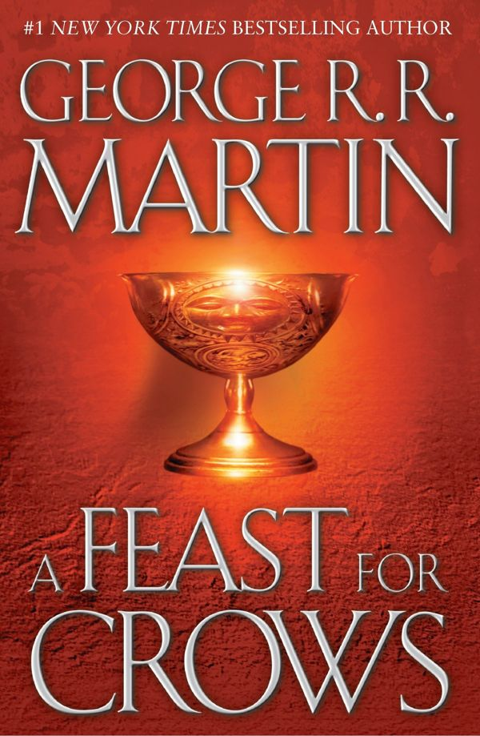

A Feast for Crows
by George R. R. Martin, 2005
- Part of
- A Song of Ice and Fire (#4)
- Description
- Few books have captivated the imagination and won the devotion and praise of readers and critics everywhere as has George R. R. Martin’s monumental epic cycle of high fantasy. Now, in A Feast for Crows, Martin delivers the long-awaited fourth book of his landmark series, as a kingdom torn asunder finds itself at last on the brink of peace . . . only to be launched on an even more terrifying course of destruction.
A FEAST FOR CROWS
It seems too good to be true. After centuries of bitter strife and fatal treachery, the seven powers dividing the land have decimated one another into an uneasy truce. Or so it appears. . . . With the death of the monstrous King Joffrey, Cersei is ruling as regent in King’s Landing. Robb Stark’s demise has broken the back of the Northern rebels, and his siblings are scattered throughout the kingdom like seeds on barren soil. Few legitimate claims to the once desperately sought Iron Throne still exist—or they are held in hands too weak or too distant to wield them effectively. The war, which raged out of control for so long, has burned itself out.
But as in the aftermath of any climactic struggle, it is not long before the survivors, outlaws, renegades, and carrion eaters start to gather, picking over the bones of the dead and fighting for the spoils of the soon-to-be dead. Now in the Seven Kingdoms, as the human crows assemble over a banquet of ashes, daring new plots and dangerous new alliances are formed, while surprising faces—some familiar, others only just appearing—are seen emerging from an ominous twilight of past struggles and chaos to take up the challenges ahead.
It is a time when the wise and the ambitious, the deceitful and the strong will acquire the skills, the power, and the magic to survive the stark and terrible times that lie before them. It is a time for nobles and commoners, soldiers and sorcerers, assassins and sages to come together and stake their fortunes . . . and their lives. For at a feast for crows, many are the guests—but only a few are the survivors. - Publication
- Bantam Books
- Publication date
- November 08, 2005
- ISBN
- 9780553801507, 0553801503
- Call number
- 813.54